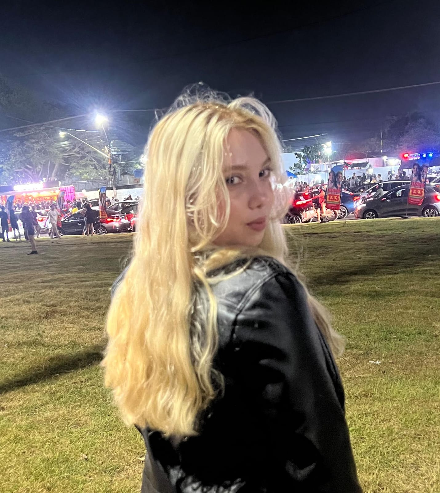

Desenvolvedora Front-end no Programa Trilhas
Sou analista de dados formada pela Cesar School, e estou em transição de carreira do curso licenciatura em Química para Engenharia Química. Atualmente, também sou desenvolvedora Front-end em formação pelo Programa Trilhas. Tenho grande interesse em alinhar análise de dados e tecnologia para criar interfaces funcionais, bonitas e acessíveis para a web, buscando sempre aprender novas tecnologias e aprimorar minhas habilidades juntando as duas coisas que eu mais amo, ciência e tecnologia.